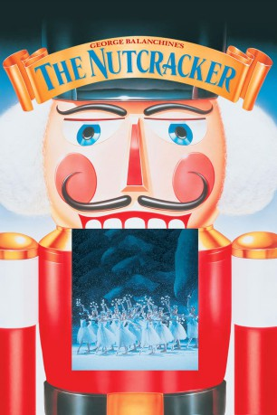

#10351 Der Nußknacker
Alternativ: George Balanchines Der Nußknacker
 
 IMDB-Wertung: 5.9 / 10
IMDB-Wertung: 5.9 / 10  Metascore: 0
Metascore: 0 
Das Weihnachtsgeschenk des Onkels, ein hölzerner Nußknacker, entführt die kleine Marie in eine Märchenwelt. Bald gilt es, gegen den bösen Mäusekönig anzutreten, unter dessen Bann der Nußknacker - in Wirklichkeit der Neffe von Maries Onkel - steht. Mit einer Armee von Spielzeugen bestehen Marie und ihr hölzerner Freund eine Reihe wunderlicher Abenteuer. Erneute Verfilmung des bekannten Märchen-Balletts in der gefeierten Choreografie des New Yorker Ballettdirektors George Balanchine, seit langen Jahren der Weihnachtsrenner des New York City Balletts.
Jahr: 1993
Dauer: 88 Minuten
FSK:
Land: USA Studio: Warner Bros.Tonspuren:
Untertitel:
Auflösung: SD (720x404) Größe: 1331 MB
Genre: Musik, Fantasy, Familie
Regisseur: Emile Ardolino
Drehbuch: Susan Cooper
Soundtrack: Pyotr Ilyich Tchaikovsky
Darsteller:
- Darci Kistler als The Sugarplum Fairy
- Kyra Nichols als Dewdrop
- Wendy Whelan als Coffee
- Margaret Tracey als Marzipan
- Gen Horiuchi als Tea
- Tom Gold als Candy Cane
- William Otto als Mother Ginger
- Peter Reznick als Fritz
- Bart Robinson Cook als Drosselmeier
- Jessica Lynn Cohen als Marie Stahlbaum
 Macaulay Culkin als The Nutcracker / Drosselmeier's Nephew
Macaulay Culkin als The Nutcracker / Drosselmeier's Nephew Kevin Kline als Narrator
Kevin Kline als Narrator- Katrina Killian als Harlequin
- Jock Soto als Parent
- Pascale Van Kipnis als Snowflake
- Santhe Tsetsilas als Hot Chocolate
- Alexis Doktor als Polichinelle / Mouse
 Marina Squerciati als Mouse / Polichinelle
Marina Squerciati als Mouse / Polichinelle- Damian Woetzel als The Sugarplum Fairy's Cavalier
- Lourdes López als Hot Chocolate
- Nilas Martins als Hot Chocolate
- Karin von Aroldingen als Grandparent
- Edward Bigelow als Grandparent
- Heather Watts als Frau Stahlbaum
- Robert LaFosse als Dr. Stahlbaum
- Roma Sosenko als Columbine
- Michael Byars als Soldier
- Robert D. Lyon als Mouse King
- Helene Alexopoulos als Parent
- Lauren Hauser als Parent
- Melinda Roy als Parent
- Stephanie Saland als Parent
- Simone Schumacher als Parent
- Deborah Wingert als Parent
- Lindsay Fischer als Parent
- Kipling Houston als Parent
- Peter Naumann als Parent
- Alexandre Proia als Parent
- Eriends Zieminch als Parent
- Kimberly Cortes als Child / Angel / Soldier
- Eve Harrison als Angel / Child
- Petra Hoerner als Angel / Child
- Miriam Peterson als Child / Soldier
- Ashley Siebert als Angel / Child
- Kielley Young als Angel / Child
- Misha Braun als Child
- Alex Levine als Child / Mouse
- Igor Odessky als Child / Mouse
- Andrei Vitoptou als Child / Mouse
- Alex Wiesendanger als Child
Datei: X:\Märchen\Nußknacker, Der (1993, FSK, 720x404).mkv seit 30.12.2018
Festplatte: Kinder-Filme+Trick
 Es gibt insgesamt 61 Filme in der Gruppe 'Märchen'
Es gibt insgesamt 61 Filme in der Gruppe 'Märchen'